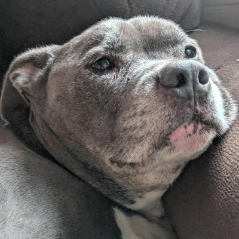
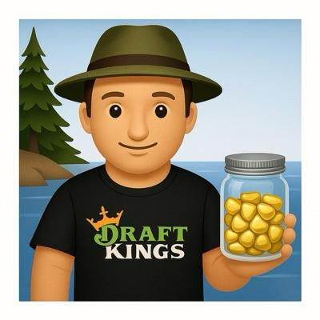
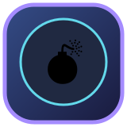

WEEK 6
IS UNWELL.
Best ball. League receipts, matchup chaos, and actual math to back up the slander.
Updated October 20, 2026 at 09:35 AM CT · Verified Sleeper results
4whoresman chose violence

176.08 points. Weekly high score, 9-0 in all-play, and a fresh invoice for everyone below them.🏆 Weekly Awardz
Ten managers. Ten different trophies. Data-backed chaos, most dramatic first.
4whoresman
Won by 37.57. The opponent has been placed in witness protection.
Connecticut Cheddarwurst
Fell from #2 to #7. The wheels left the group chat.
Krispy Kremepie
Won despite ranking #9 in points. The schedule is their franchise QB.
Lamar hit it, Cam came
54% of points came from outside the top three. Actual bench-industrial complex.
StinkyButt69
Top scorer contributed 25% of team points. Everybody else rode shotgun.
The fighting greeks
4 counted players reached 20+ points. Slot-machine simulator activated.
Wes Mantooth
Scored 113.45. The offense has been reported missing.

bingbongtinydongJumped from #9 to #5 in scoring. Lazarus got the Wi-Fi password.
docjoff
Top three produced 57.10 points. Stars on airplane mode.

Nuclear WarheadThe Chavenators
167.15 points. The scoreboard just filed a workers comp claim.
State of every bro
Tap your team. Scoreboard first, full receipts underneath.
6-0 Lamar hit it, Cam cameWIN · 133.00
Match: Lamar hit it, Cam came beat Connecticut Cheddarwurst, 133.00–124.80. Got the W from the bottom half of weekly scoring. Timing is an elite fantasy skill. Top lineup contributors: Isaiah Likely 22.40, Bryce Young 22.09, George Kittle 16.65.
Season vibe: #5 in total points with a 6-0 record. This was a #6 weekly score, while your season-long points rank is #5. Scoring-deserved wins: 3.56; actual: 6.
Top automatic best-ball scorers: Isaiah Likely 22.40, Bryce Young 22.09, George Kittle 16.65
5-1 The ChavenatorsWIN · 167.15
Match: The Chavenators beat The fighting greeks, 167.15–136.59. Scored enough to win and actually got rewarded for it. Rare administrative competence. Top lineup contributors: C.J. Stroud 33.48, Kenneth Walker 29.40, Omar Cooper 22.80.
Season vibe: #3 in total points with a 5-1 record. The weekly output was elite. Opponents should start reviewing their insurance. Scoring-deserved wins: 4.22; actual: 5.
Top automatic best-ball scorers: C.J. Stroud 33.48, Kenneth Walker 29.40, Omar Cooper 22.80
4-2 4whoresmanWIN · 176.08
Match: 4whoresman beat StinkyButt69, 176.08–138.51. Scored enough to win and actually got rewarded for it. Rare administrative competence. Top lineup contributors: Tyler Shough 30.46, Christian McCaffrey 28.45, Kirk Cousins 26.77.
Season vibe: #1 in total points with a 4-2 record. The weekly output was elite. Opponents should start reviewing their insurance. Scoring-deserved wins: 3.78; actual: 4.
Top automatic best-ball scorers: Tyler Shough 30.46, Christian McCaffrey 28.45, Kirk Cousins 26.77
4-2 StinkyButt69LOSS · 138.51
StinkyButt69’s Box-Office Bomb: 138.51 Points, Federal Inquiry Optional
THE FILM ROOM The film room smells like burnt garlic: StinkyButt69 posted 138.51 and still got steamrolled by 176.08 — Trevor Lawrence (35.09) and Bhayshul Tuten (23.70) did the heavy lifting but Carnell Tate’s 17.50 couldn’t close the gap. Counted best-ball shows QB scoring (47.86) outpaced WRs (39.9) this week; leaning two-QB production into a single lineup created a ceiling but hollowed the bench floor. Three-week trend collapsed from 213.39 to 138.51 after a perfect 176.25 prior spike; volatility is now the roster’s signature play.
THE BIGGER CONSPIRACY Satirical subpoena: League Office requests all DMs, receipts, and aura-farming rituals — why does top three share hit 55.1%? With weekly_allplay_wins 7 you’d think the cosmos loves this squad, but schedule_luck_wins at -0.44 and a -37.57 matchup margin suggest cosmic sabotage. The advanced insight: TE output is micro-atrophied (TE: 8.15 points) so opponents can outscore by exploiting tight end scarcity; this explains blowout susceptibility despite elite QB output.
NEXT EPISODE Fixation on two-QB peak weeks must be tempered — diversify RB/WR floor depth and stop treating bye weeks like occult rituals. All-play strength says the team can grind back; unless the manager pulls a lobbyist, another cinematic collapse is on the docket. Punchline: if fantasy had bailiffs, StinkyButt69 would be in cuffs for excessive volatility.
Top automatic best-ball scorers: Trevor Lawrence 35.09, Bhayshul Tuten 23.70, Carnell Tate 17.50
3-3 Krispy KremepieWIN · 114.92
Krispy Kremepie gets glazed: one-point sashimi and a best-ball guilt trip
THE FILM ROOM Film room says this win-by-a-hair was a crucible: counted_best_ball shows WRs piled 44.45 points while RBs mustered 33.7 and QBs 26.77 — that WR-heavy tilt (Matthew Golden 22.90) carried the week as the backfield chipped in (Chuba Hubbard 20.85, J.K. Dobbins 12.85). The three-week arc (169.4, 185.21, 114.92) reveals a sharp drop-off this week; production cratered relative to the two prior smash weeks, exposing overreliance on boom WR weeks rather than steady RB/QB floors.
THE BIGGER CONSPIRACY In the satirical federal dossier circulated in the group chat, the League Integrity Commission accuses Krispy Kremepie of aura farming — hoarding sunny WR vibes to inflate weekly_rank while weekly_allplay_wins 1 and losses 8 scream terrible matchup luck. Top_three_share_pct 51.3 implies two or three players are doing half the heavy lifting; that’s a single-week strategy masquerading as a season plan. The team’s scoring_deserved_wins 2.56 vs actual_wins 3 reads like clerical error: points support wins but not the timing.
NEXT EPISODE Fix the floor: tilt roster construction toward RB/QB consistency without firing the WR cannons. With season_total_points 944.33 and season_points_rank 6, this jury’s still out — glaze the donuts less, and start glazing opponents instead. Final verdict: bring receipts, not crumbs.
Top automatic best-ball scorers: Matthew Golden 22.90, Chuba Hubbard 20.85, Daniel Jones 15.26
2-4 The fighting greeksLOSS · 136.59
Match: The fighting greeks lost to The Chavenators, 136.59–167.15. Lost despite finishing in the top half of weekly scoring. Certified schedule violence. Top lineup contributors: Jayden Daniels 29.50, Jaxon Smith-Njigba 24.40, Germie Bernard 22.95.
Season vibe: #4 in total points with a 2-4 record. This was a #4 weekly score, while your season-long points rank is #4. Scoring-deserved wins: 3.67; actual: 2.
Top automatic best-ball scorers: Jayden Daniels 29.50, Jaxon Smith-Njigba 24.40, Germie Bernard 22.95
2-4 Wes MantoothLOSS · 113.45
Match: Wes Mantooth lost to Krispy Kremepie, 113.45–114.92. Opponent had more points. The scoreboard is a ruthless unpaid intern. Top lineup contributors: Josh Allen 23.55, Kyle Pitts 21.75, Jonathan Taylor 20.60.
Season vibe: #8 in total points with a 2-4 record. A brutal weekly all-play showing. Redemption arc pending approval. Scoring-deserved wins: 1.89; actual: 2.
Top automatic best-ball scorers: Josh Allen 23.55, Kyle Pitts 21.75, Jonathan Taylor 20.60
2-4 docjoffLOSS · 118.83
Match: docjoff lost to bingbongtinydong, 118.83–133.51. Opponent had more points. The scoreboard is a ruthless unpaid intern. Top lineup contributors: Malik Nabers 27.50, Keon Coleman 14.90, Rachaad White 14.70.
Season vibe: #10 in total points with a 2-4 record. This was a #8 weekly score, while your season-long points rank is #10. Scoring-deserved wins: 1.22; actual: 2.
Top automatic best-ball scorers: Malik Nabers 27.50, Keon Coleman 14.90, Rachaad White 14.70
1-5 bingbongtinydongWIN · 133.51
Match: bingbongtinydong beat docjoff, 133.51–118.83. Scored enough to win and actually got rewarded for it. Rare administrative competence. Top lineup contributors: Caleb Williams 25.50, Brock Purdy 22.61, Colston Loveland 17.00.
Season vibe: #7 in total points with a 1-5 record. This was a #5 weekly score, while your season-long points rank is #7. Scoring-deserved wins: 3.00; actual: 1.
Top automatic best-ball scorers: Caleb Williams 25.50, Brock Purdy 22.61, Colston Loveland 17.00
1-5 Connecticut CheddarwurstLOSS · 124.80
Match: Connecticut Cheddarwurst lost to Lamar hit it, Cam came, 124.80–133.00. Opponent had more points. The scoreboard is a ruthless unpaid intern. Top lineup contributors: Drake Maye 30.80, Michael Penix 28.35, Emeka Egbuka 16.05.
Season vibe: #9 in total points with a 1-5 record. This was a #7 weekly score, while your season-long points rank is #9. Scoring-deserved wins: 1.67; actual: 1.
Top automatic best-ball scorers: Drake Maye 30.80, Michael Penix 28.35, Emeka Egbuka 16.05
Week 6 All-Play Record
How many of the other nine teams each manager outscored this week. This is NOT the head-to-head record.
| Rank | Manager | All-play | Week pts |
|---|---|---|---|
| 1 | 4whoresman | 9-0 | 176.08 |
| 2 | The Chavenators | 8-1 | 167.15 |
| 3 | StinkyButt69 | 7-2 | 138.51 |
| 4 | The fighting greeks | 6-3 | 136.59 |
| 5 | bingbongtinydong | 5-4 | 133.51 |
| 6 | Lamar hit it, Cam came | 4-5 | 133.00 |
| 7 | Connecticut Cheddarwurst | 3-6 | 124.80 |
| 8 | docjoff | 2-7 | 118.83 |
| 9 | Krispy Kremepie | 1-8 | 114.92 |
| 10 | Wes Mantooth | 0-9 | 113.45 |
Total Season Lucky Dawg Rankings
Actual minus expected wins. Positive = favorable matchups; negative = brutal scheduling. Every week, 9-0 all-play earns 1 expected win, not 9 actual wins.
Gold = luckiest · Purple = unluckiest · Blue = everyone else. Dot numbers match the table below.
| Rank | Manager | Expected wins | Actual wins | Luck |
|---|---|---|---|---|
| #1 | Lamar hit it, Cam came | 3.56 | 6 | +2.44 |
| #2 | The Chavenators | 4.22 | 5 | +0.78 |
| #3 | docjoff | 1.22 | 2 | +0.78 |
| #4 | Krispy Kremepie | 2.56 | 3 | +0.44 |
| #5 | 4whoresman | 3.78 | 4 | +0.22 |
| #6 | Wes Mantooth | 1.89 | 2 | +0.11 |
| #7 | StinkyButt69 | 4.44 | 4 | -0.44 |
| #8 | Connecticut Cheddarwurst | 1.67 | 1 | -0.67 |
| #9 | The fighting greeks | 3.67 | 2 | -1.67 |
| #10 | bingbongtinydong | 3.00 | 1 | -2.00 |
NFL reality check
Exactly three player eruptions. Real NFL opportunities, not estimated workloads.

Malik Nabers
NYG vs NO
Fifteen targets, twelve receptions, and 165 yards. Nabers turned every route into a personal petition for the football.

Christian McCaffrey
SF vs WAS
Sixteen carries and ten targets with two rushing scores. McCaffrey remained the entire offensive department.

Trevor Lawrence
JAX vs HOU
Four passing touchdowns and 306 yards on 41 attempts. Lawrence turned volume into a four-score air campaign.
Next week's propaganda
The receipts do not expire
4whoresman has the weekly crown, Wes Mantooth needs a bounce-back, and the remaining managers have seven days to manufacture excuses.